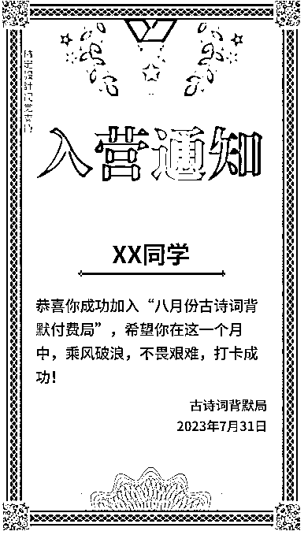

来源：https://htsuhz76ht.feishu.cn/docx/C6NVdiUsboNdXPxsEymcM7LhnFg
首先，非常感谢我的贵人梁靠谱和理白先生，是他们引领我，带我进入生财有术这个大家庭，没有他们，就没有这篇帖子。
先【自我介绍】一下：
但是，我是一个啥产品都没有的人，那么我是如何凭借【战略思维】，通过小学生的【打卡】项目，撬动并跑通最小MVP闭环，获得1w+收入的？
我将分三个部分来介绍，以下是文章的大纲：
不得不说，现在的教育真的非常卷。家长们又非常焦虑，孩子习惯不好啦、成绩不好啦，都会是日常的谈资。
我的身边就有这样的一群妈妈们，她们非常重视孩子的学习，但是却不知道如何帮助孩子提高成绩。
我和别的妈妈不一样，在别人关注如何让孩子多做题的时候，我考虑的是如何让孩子高效学习。
我认为，一群人才能走得更远，孩子在一个有氛围的群体中学习人更有动力。
去年暑假，我想让孩子把下一学年的古诗词背默完成，所以发起了一个押金打卡计划，让一群孩子共同来打卡古诗背诵
因为我的【战略思维】靠前，所以我能把所有流程想清楚，并很好地推动一个项目闭环，于是，一个关于【古诗词打卡】的局，就被我组起来了。
意外地，我因为这个组局，接二连三地跑通了低客单价和中客单价的产品，现在想起来还挺有成就感的。
其实当初设置这个押金打卡项目，并没有想过要赢利。我是本着完全利己顺便利他的想法去策划这个项目的。
打卡局的规则非常简单：
就这两条规则，没了。
看起来简单，但其实并不容易执行。
想都是困难，做才有结果。仅有这个策划，要如何去推进，去落地，要【躬身入局，把手弄脏】去验证才知道
庆幸的是，这个打卡局最终押金拿回率非常高，暑假组了两场局，无论是21个孩子的第一局，还是17个孩子的第二局，最后一共只有2个孩子没有完成挑战。
在组这个局之前，我也和家长们约定好，钱要给到孩子，为的是保证他们的积极性。
孩子们除了拿回本金，还拿回了一点点利息，很有成就感
想要组这个局，怎么可能少了宣传环节？其实我当时宣传的渠道很窄，只有几个妈妈群。
所以我就自己设计了古诗打卡局的海报
这个海报也很简单，说清楚了打卡起始的时间和两条规则
当初我只想跑通一个项目，怕砸了自己的口碑，所以限制了人数。30个人，不能再多
但就是这样的免费局，吸引了妈妈们的关注。我只在一个关注孩子的学习群里说了一下，发了一张海报，再加上大女儿身边的同学，就这样凑起来了一个局
开营当天，给了每个孩子一张【入营通知】书，给他们满满的仪式感 。不要看这只是一张简单的图，孩子看起来就觉得很不一样，第一步就让人觉得你【有心】

我用的是出口成章这个APP，紧跟课内，可以一次性批量设置未来每一天的打卡任务，
我只需要花一点时间一次设置到位，当然还可以用其他的小程序。用什么小程序不重要，主要是能实现自己需要的功能就行。
打卡目标：一天读背并默写古诗词一到两首，无痛，小步快走，孩子能接受，跳一跳就能够到目标
我每周都会通报哪些孩子这周打卡完成，用已完成的人正向鼓励未完成的人，让大家向着自己的目标前进。
定期会在群里跟踪，哪些孩子已经完成了任务，哪些还有欠缺，甚至可以和大家同步怎样学习更高效
结营的时候，我晒了一张朋友圈，同样的，我给孩子们每个人一张结营证书，让他们知道自己的努力没有白费。
但是，就是很意外地，一个免费的项目，成了我的获客纽带。
当跑通了第一个免费的局，后面的故事，就容易多了。
有了第一次利他且是免费项目的跑通，我意识到，是不是可以做一些小的、付费项目，当作是一种尝试？
于是 ，我有了第二个想法——【小练笔】
家里有小学生的父母大概知道，语文三大版块：语基、作文、阅读理解
语基这块好搞呀，只要把老师要求的字词、背默搞定就行，但作文和阅读理解真的不是那么好弄的
作文这块是很多孩子和父母的痛点。
孩子痛苦在于：不会写；父母的痛点在于：不会教。
我虽然有写作的经验，但是真的要我教写作文，怕不专业。
七年前入行自媒体写作，认识了一群志同道合的朋友，其中不乏一些老师，他们八小时内当老师，八小时外写稿
作文这块，还是需要交给专业的老师带，一是效率高，二是成效快。
我是一个没有产品的小白，但是我找到了专业的语文老师王老师当我的搭档，我负责宣传和社群运营，她负责教学，
于是，一个临时产品运营班子，就这样搭起来了。
我现在在反思，如果我把项再提前一点策划，也许会更好。
大概7月30日，第一个打卡局快结束的时候才意识到可以复制已经跑通的打卡局。
我把我的想法和王老师一说，两个人一拍即合。因为十五年的教龄摆在那，她的手上有得是现成的资料
我跟她说我的想法：小而精。她非常认同我的理念。
十天运营起一个项目，看似不可能的任务，我们在争分夺秒，一要保证质量，二要保证宣传，两条腿走路，一样都不能少。
权益就这些，也是很简单，但是就戳到了家长的心。这一期总收益近3000元。
因为我们没有野心，所以这个成绩，对我们来说还是值得欣喜的
很好笑的，我做宣传，跟王老师对产品线，结果那段时间脚发炎，发烧好几天，那段时间为了保证产品的质量，我边挂着水，边跟老师聊产品，太拼了。
这个线上的小产品，就这样折腾起来了。
既然有了前两项的经验，那么我就考虑把势能放大。做一个中客单的产品，把产品定位在了【阅读理解】这个语文的硬骨头上
前期的宣传和后期的执行，我们大差不差，就不多赘述了，但是这次，我们把产品按需求分成了两个档次，这件事倒是可以说一下。
所以在这一部分我重点说一下【产品策划】环节
首先，阅读理解这个产品能做起来是因为，孩子不懂套路，家长不会教。对于想要提升语文成绩的孩子来说，这是刚需。
其次，有了前两次的经验以及孩子们快速拿到的结果，让家长们对我们特别信任。我做了一个调研，为什么他们会报我们的产品，是因为：
有了这些经验和信任，我们操作一个中客单价的产品也就不难了。
我们定位好了要做阅读理解，那就策划起来
市面上有这么多小学生阅读理解的教材，我们要做不一样的课程，到底哪里不一样？
在项目策划环节，作为一名喜欢高效反对大量刷题的母亲，我一直在思考这个问题
市面上的课程虽然也有老师讲解，但没有老师跟踪，这就是我们做阅读理解训练营的优势。
孩子先做——再听讲解——然后修改——最后形成自己的答题思路——老师跟踪有没有完成。
这是我当初的设想，也得到了王老师的肯定，这是我们这个阅读理解训练营的特色。
另外，除了在形式上不同，我们在价格上也做了区分。
差异化的产品让家长自己也有了选择权，599的课，一学期，16节，其实并不贵，很多家长都能接受。
市面上动不动就100篇、80篇的练习册，其实孩子们看起来挺害怕的。有时候家长们买回来的练习，孩子根本写不完，浪费。
我们对市面上的教材做了大量的调研，最终确定了一款比较知名的教辅（为了不涉及广告，这里不提书名），并且，针对每个单元的练习，做了筛选——只要32篇，一周两篇，只要每周抽出一个小时（做练习半小时，听课半小时）就能提升阅读理解的成绩。
一些和上面说的相同的流程，我就不说了，比如开营、仪式感。这里主要说一些不同的。
这一期下来，一共收入7000+，加上上面说的小练笔打卡营，通过两个项目，共营收10000+
1、如果你是任课老师，完全可以发挥你的优势，做一些学科类的产品。
2、之所以能跑通两个项目并有10000+的营收，主要有以下几个方面
以上就是我的一些小小分享。
最后，再次感谢靠谱姐、理白先生，他们是我在生财遇到的贵人。如果这篇文章对您有帮助，那会是小陌的荣幸。
感恩遇见，谢谢阅读！